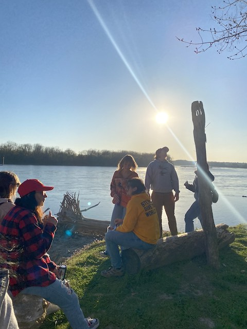
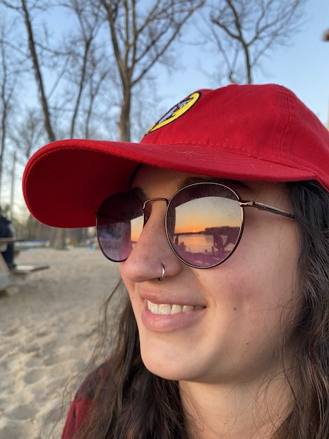
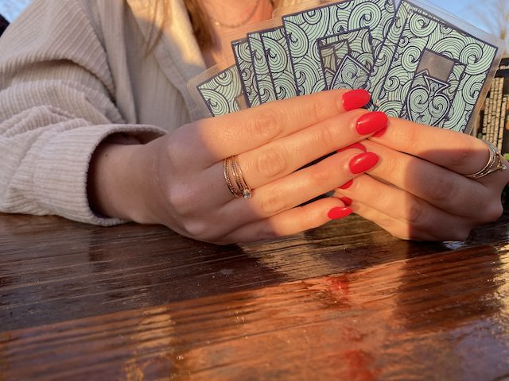
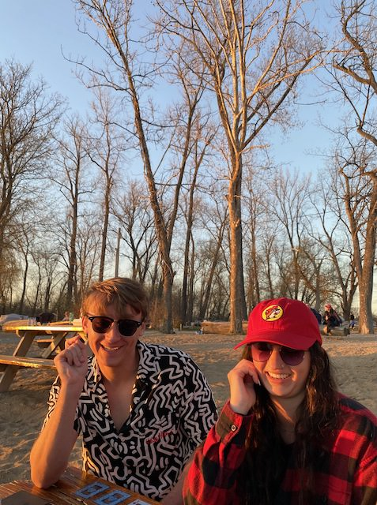
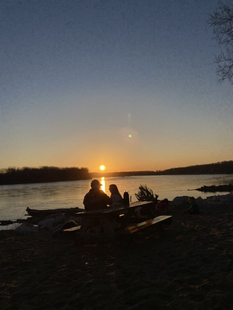

The friend group meets up at Cooper's Landing before going to skip rocks on the river. | Photo / Megan Mueller.

Rachel watches the sunset go down on the river.

Delanie holds her cards close to her while playing a game of Slap Jack.

Camden Brazile and Rachel Barnes laugh with the group while making inside jokes.

A couple looks out and watches the sunset on a beautiful April evening.
.